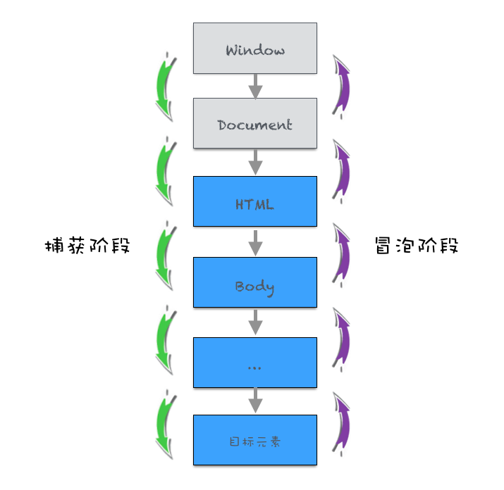

1. DOM 事件的级别
- DOM0:
1 | element.onclick = function(){} |
- DOM2：addEventListener(冒泡、捕获等)
1 | element.addEventListener('click', function(){}, false) |
- DOM3：增加了事件类型（鼠标、键盘事件等）
1 | element.addEventListener('keyup', function(){}, false) |
为什么没有 DOM1?
DOM1 标准制定时，没有与事件相关的标准，因此没有 DOM1，不代表 DOM1 标准不存在。
2. DOM 事件模型
捕获和冒泡
3. DOM 事件流
事件流指的是与用户交互过程中，事件如何响应，如何传到页面上的。分为：
- 捕获阶段
- 目标阶段
- 冒泡阶段
4. DOM 事件捕获的具体流程

注： 捕获阶段触发 DOM 事件的最顶层是 window。
5. Event 对象的常见应用
1 | // 阻止默认行为 |
6. 自定义事件
应用场景：我们希望给某些按钮绑定一个点击事件，但希望在事件中做一些额外的处理，而非在回调函数中进行处理。
1 | var eve = new Event('custome'); |
Event 对象存在一些限制，它只能指定事件名，但无法给事件添加参数，而 CustomEvent 对象可解决这一问题。